ANTlabs dashboard
Introducing monitoring and management functions for ANTlabs’ centralised dashboard.
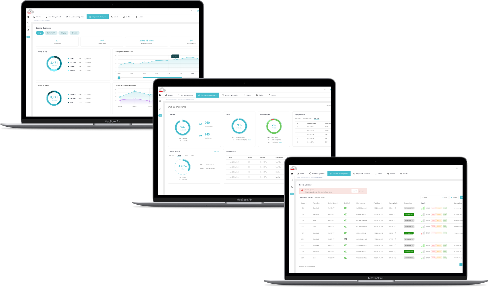
A new screen casting service
ANTlabs is a company that provides technology solutions for businesses to manage their network infrastructure and provide internet access to their customers and guests. They focus on providing solutions for the hospitality industry, which includes hotels, resorts, and other hospitality businesses. Their product, ANTlabs Service Platform (ASP), a WiFi-as-a-Service platform, allows these businesses to take control of their WiFi service offerings across multiple organisations and sites with a centralised dashboard.
The client was introducing a new screen casting offering to the existing interface of ASP. I was given the opportunity to propose and design the new pages of this screen casting service management. The design should:
- Allow guests to securely/seamlessly connect their personal devices to stream their own content on the inroom TV.
- Allow businesses to deploy chromecast devices and manage them across different rooms easily.
- Provide monitoring and management functions to help businesses ensure service quality and proactive troubleshooting/service recovery of any casting issues.
Reorganising the sitemap
With the addition of a new casting service, it was expected that there would be at least 8 new pages to create. These relate to the casting functionality itself, and its corresponding reports. I studied the existing product and spent some time understanding the information under each menu, before deciding to reorganise it.
The first change I made was to separate the Sites and Services pages by introducing a new category called Service Management to the primary navigation. Previously, content such as Bandwidth and VLAN, which pertained to the other High Speed Internet and Web Filtering services, was grouped together with the remaining site management pages, all labeled under Site Management. This arrangement not only caused confusion for users but also threatened to overcrowd and burden the menu if we were to include the Casting pages within the same category.
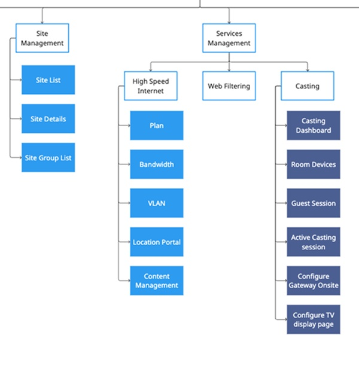
Next, I discussed with ANTlabs on the type of reporting content they needed me to design. The content ranged from tables, charts, and logs. In their existing product, all such content fell under one label “Reports & Analytics”. It was already a very long menu, so I decided to break it up into subcategories according to the type of service to make it easier for the user to find what they need. I also separated these reports by content type - detailed records (logs) and overview pages (charts), so that different types of users can quickly access the different types of information they need. For example, an IT manager would likely need to see the raw data in the logs, while a General Manager may prefer to get a quick overview by reviewing data in charts.
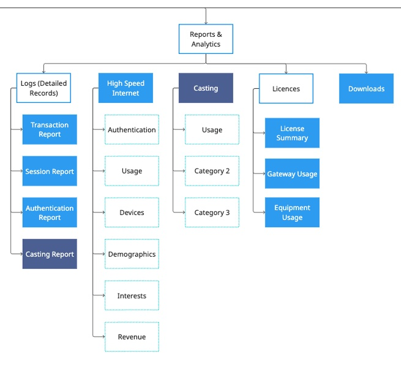
Addressing existing usability issues
As I moved into the design stage, I made changes to fix usability issues I found while studying their existing product. I focused on making user interactions smoother, navigation easier, and the overall interface more intuitive.
Inaccessible content on smaller screens
- There were hidden columns that could not be accessed by users on smaller screens sizes.
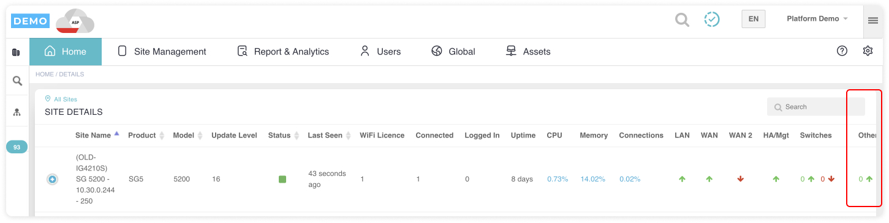
Introducing column selectors
I designed a column selector to allow users to customise the data they view, focusing on the specific metrics or information that are most relevant to their tasks or objectives. This flexibility enhances user experience by tailoring the dashboard to individual needs.
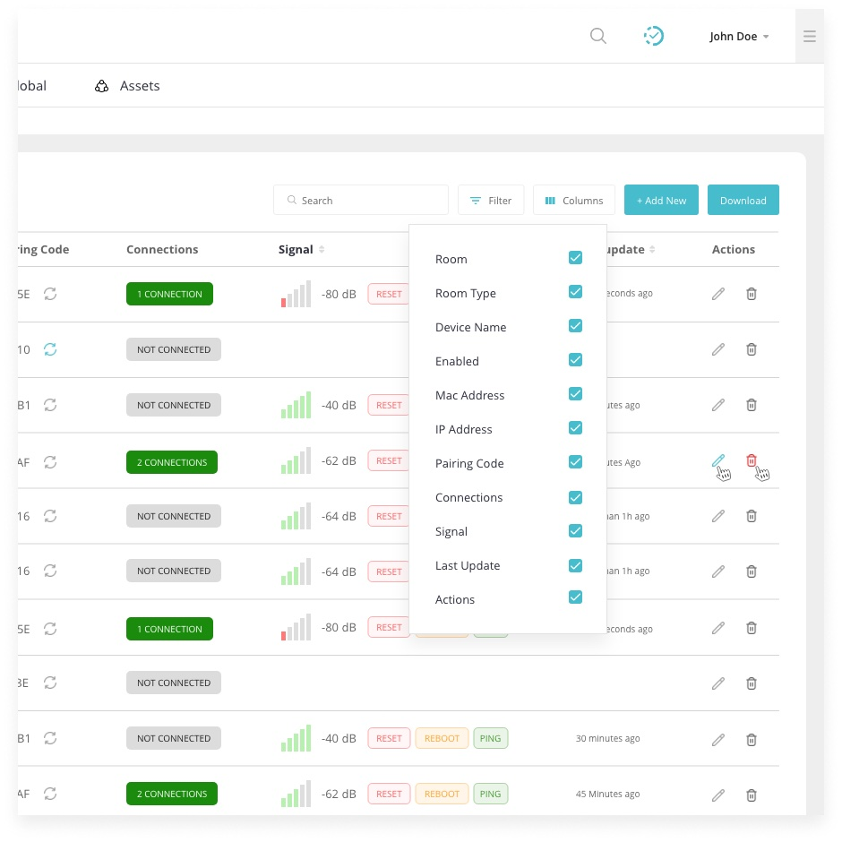
No indication of user's present location
- The page title is not updated when user switches to a different group/organisation.
- Furthermore, when the site selector menu is collapsed, the user is not able to see the applied filters ie. they will not know which group or organisation the info comes from.
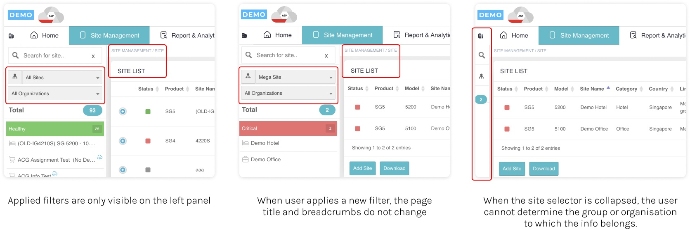
More emphasis on current page
I enhanced the breadcrumb design by giving the current page greater prominence through the use of a heavier font weight. I also made sure that each page had their individual titles.
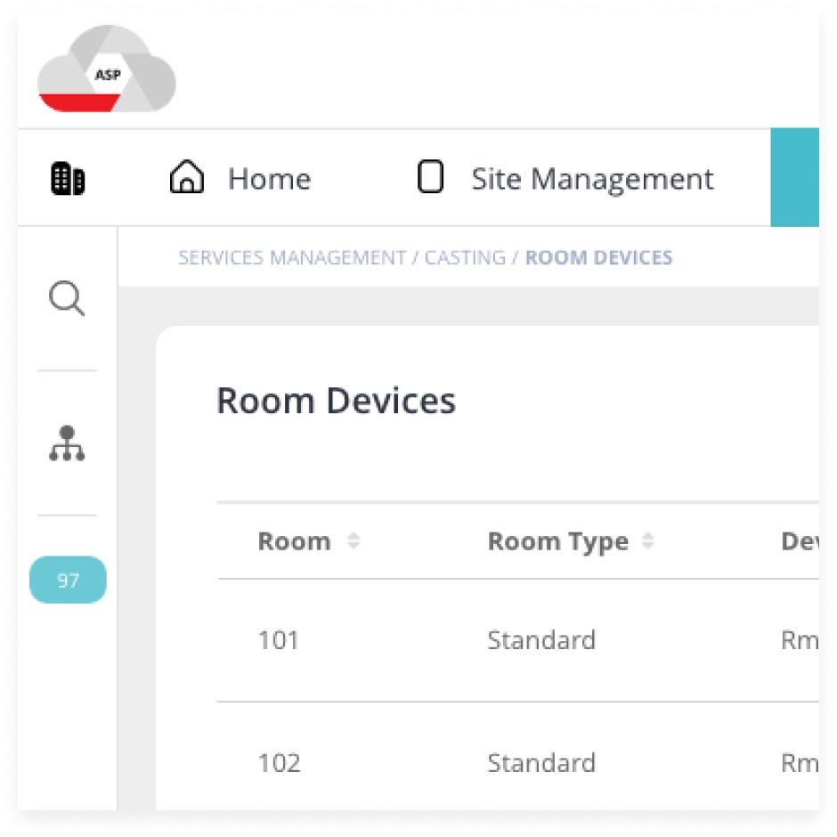
Poorly positioned buttons
- In the table listing pages, the CTAs are located at the bottom of the page. These include important buttons like “Add Site”, “Download”, “Add Site Group”, etc.
- It can be frustrating if the user is unable to find the CTA and is unable to take the specific action that they need.
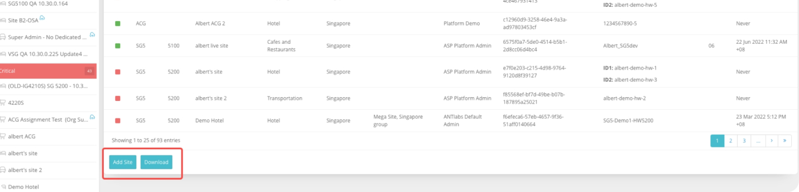
Repositioning of primary CTAs
Considering the users' goals and context of the content they are engaging with, I relocated the primary CTAs to the page's upper section. This adjustment ensures that users can promptly understand the required action.
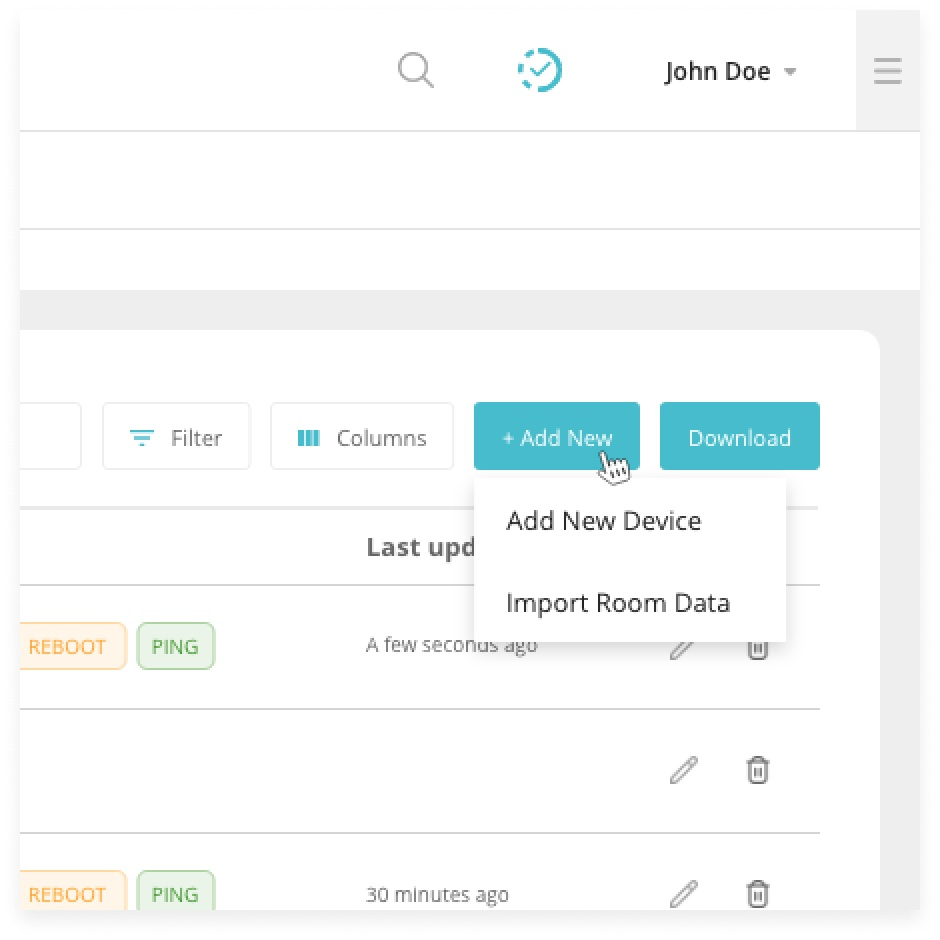
Wireframing the casting pages
Following the sitemap I created earlier, I worked on designing the new pages that would be needed for the new screen casting feature. Here are some of the lofi wireframes.
Casting configuration page
I developed a customisable welcome screen page for administrators to tailor the user experience of the screen casting feature.
I incorporated components like headings, images, and videos. Additionally, I added a feature enabling administrators to save different page designs for different sites.
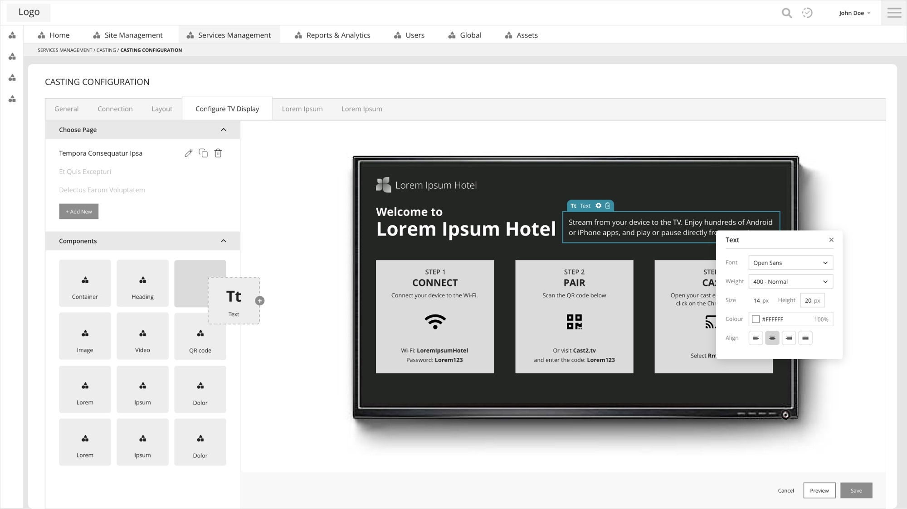
Casting report
I designed a log to provide visibility into system behavior, help diagnose issues, monitor performance, ensure compliance, and support security efforts. This includes detailed information such as timestamp, user and room details, session duration, device information, etc.
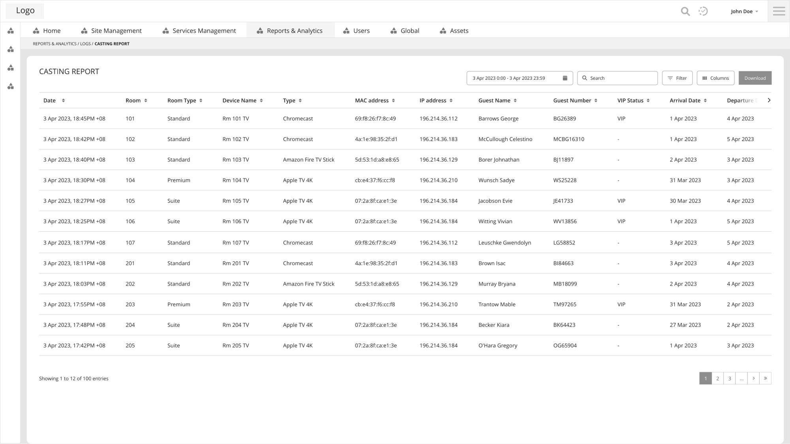
Casting overview
I created some charts to provide a visual representation of data. This would help management to understand and analyse complex information.
I identified two main areas of focus for stakeholders regarding the casting function: usage and device health. Usage data included casting sessions over time and number of user sessions, while device health data included number of devices and which were most active. I organised these into separate tabs for easy access.
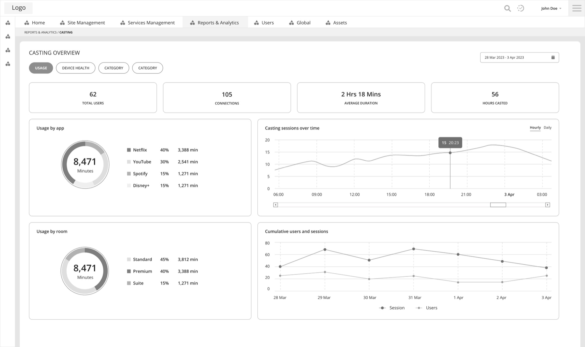
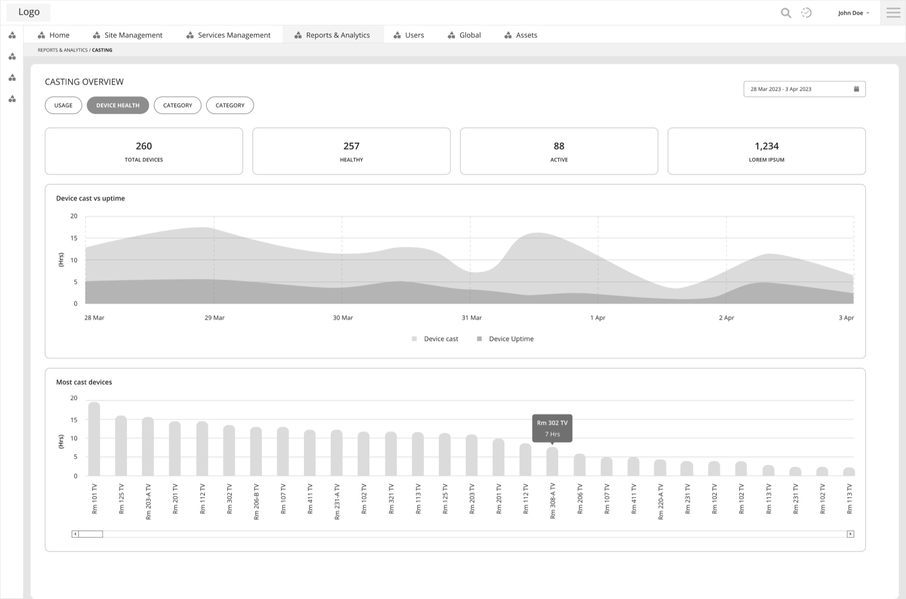
An intuitive and aesthetic UI
I also introduced new functionalities to enhance the usability of the new casting pages. These included dropdown menus to categorise menu items and allow users to access specific information quickly, sidebars to offer an accessible navigation hub for configuration of casting devices, prominent alert notifications to ensure administrators are promptly informed of any issues that require attention and charts to visually represent complex data trends and patterns and help administrators quickly grasp network performance metrics, user activity, and other analytics.
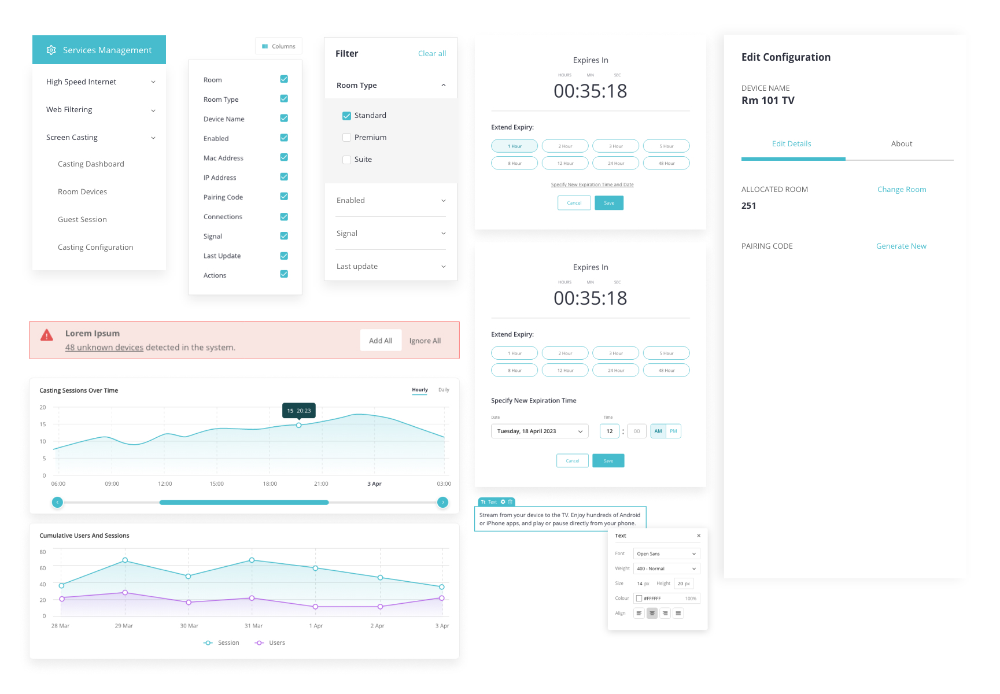
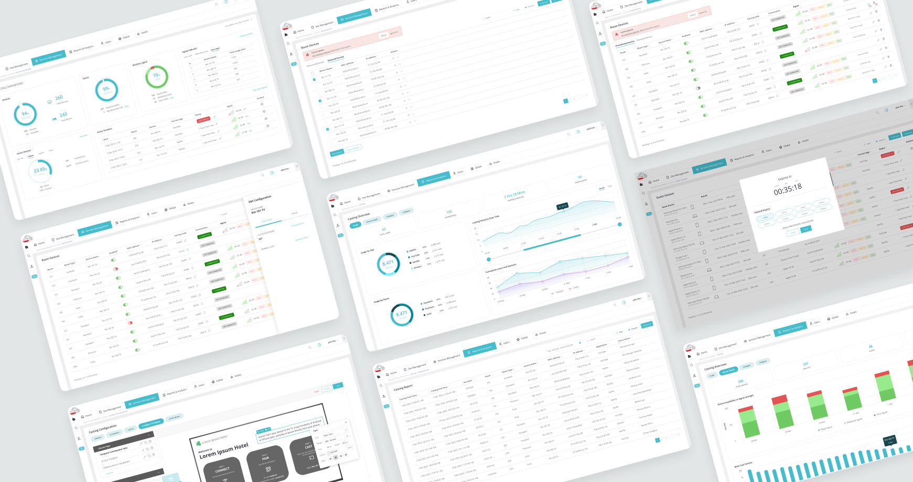
Project complete and sign off!
I reviewed the hifi mockups with the client and participated in a session to observe the product in a demo stage. After a couple of final adjustments, we obtained the client's approval and signed off on the project! Here's what they had to say.
“The UX/UI team is professional and pleasant to deal with. We got what we wanted and also some ideas on further improvement. They definitely know their stuff and as long as we stick to the schedule proposed, things will get done.”